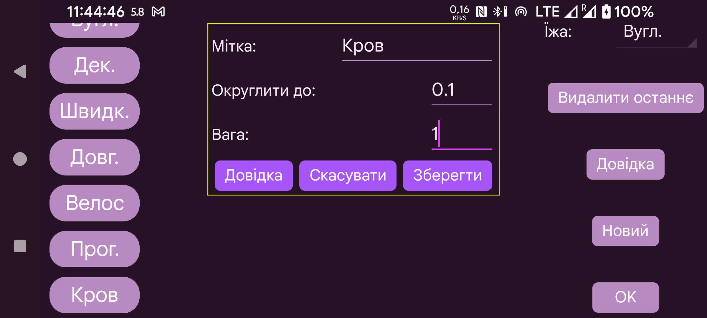

ar be de es fr hi it ja nl pl pt ru tr uk uz zh en
Тут можна створювати, видаляти й змінювати мітки для величин, доданих на графік, наприклад інсуліну, вуглеводів або фізичної активності. Якщо деякі значення вже збережено, вони отримають мітку відповідно до своєї позиції. Тобто якщо другій позиції надати іншу назву, раніше збережені значення з колишньою назвою в цій позиції отримають нову назву.
Щоб змінити мітку, торкніться її.
Після параметра Їжа можна вибрати мітку, яка позначає вміст вуглеводів у прийомах їжі. Для цієї мітки у вікні «Нова сума» лівого середнього меню додається кнопка Їжа , за допомогою якої можна скласти прийом їжі з інгредієнтів. Сума вуглеводів зберігається під цією міткою; згодом прийом їжі можна переглянути, вибравши його для збереженого значення.